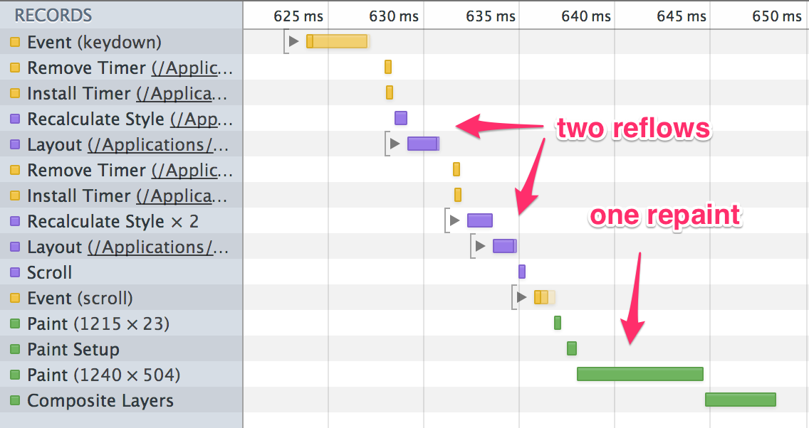
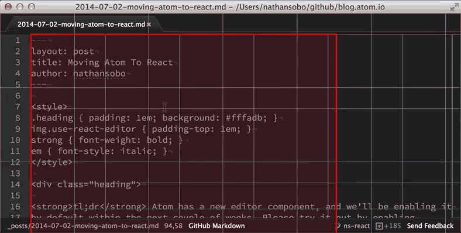
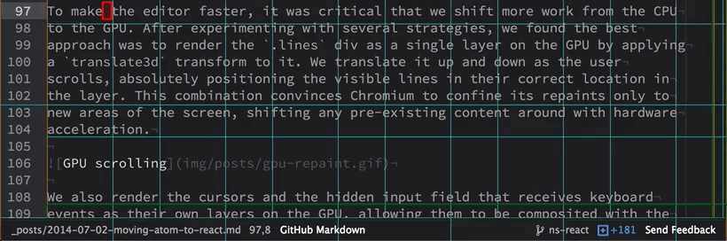
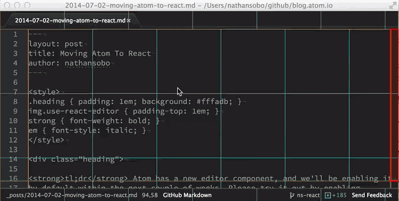

Moving Atom To React
July 2, 2014 nathansobo
Tweet

Performance is a top priority for the Atom team, and recently we’ve been focusing on making basic text editing smoother and more responsive. After some initial incremental progress, we decided to take a step back and rewrite the editor component’s view layer with a superior framework and a better understanding of the problem.
Extra Reflows Kill Performance
Writing fast JavaScript is not the sole factor in the performance of web applications. If model changes aren’t efficiently translated into display updates, even the fastest application logic and the cleverest data structures aren’t enough. This is where we found ourselves with Atom’s editor rendering.
One of the biggest challenges we faced was eliminating unnecessary reflows. Whole articles have been written about this topic, but to briefly summarize, a reflow describes style and layout calculations that the browser has to perform whenever it reads from the DOM after the DOM is modified. Ideally, for any given set of DOM operations, there’s only a single reflow before new pixels are drawn to the screen. But if DOM reads and writes are interleaved in a single synchronous chunk of JavaScript, we end up wasting time performing more than a single reflow for a given display update. For example, the timeline below shows an extra reflow that occurs in the old editor when moving the cursor down causes the view to scroll.

We knew that if we wanted decent editor performance, we had to manage DOM interaction more carefully and avoid extra reflows. Yet the complexity of the editor and the fact that DOM updates were being augmented by external packages continued to frustrate our efforts. Reflows kept creeping back in, and we had a hard time reasoning about the ordering of reads and writes as we made changes to the editor.
Subjugating the DOM With React
In our effort to banish reflows, we had two main problems to solve. First, we needed to minimize reads from the DOM as much as possible. Second, we needed to improve the discipline of DOM updates, giving ourselves a better ability to reason about the order of reads and writes. Increasingly dissatisfied with our existing, deliberately simple view framework, we decided to try React.
Right out of the box, React’s virtual DOM got us a long way toward our goal of treating the DOM with kid gloves. Though we worked with raw DOM nodes in a few places for performance and measurement reasons, it offered a declarative abstraction that relieved us of the tedious state management typically associated with DOM updates. In addition, React’s well-defined reconciliation strategy and lifecycle hooks made it easy to reason about the sequencing of the manual DOM interactions we did have to perform.
Rewriting also gave us a fresh chance to be much more stingy with our DOM reads.
For example, previously moving the cursor read the scrollTop and scrollLeft
of the editor’s .scroll-view element in order to determine if we needed to
auto-scroll. This time around, we represented scroll position in the model
layer, which allows us to make scrolling decisions directly in code that manages
the cursor object.
Minimizing Repaint With Hardware Acceleration
Another major performance obstacle in the old editor was time spent on repaints. Chromium typically performs scrolling on the GPU, but this default optimization wasn’t applied to Atom because we need to simulate scrolling by translating the lines in order to only render the lines that are visible on screen. As a result, every time the old editor scrolled even a little, the entire editor was repainted on the CPU, which is visualized in red in this animated GIF.

Chromium was also grouping the repaint of the cursor with the repaint of the cursor position in the status bar whenever the cursor moved, slowing down cursor movement.

To make the editor faster, it was critical that we shift more work from the CPU
to the GPU. After experimenting with several strategies, we found the best
approach was to render the div containing the lines as a single layer on the GPU
by applying a translate3d transform. We translate it up and down as the user
scrolls, absolutely positioning the visible lines in their correct location in
the layer. This combination convinces Chromium to confine its repaints only to
new areas of the screen, shifting any pre-existing content around with hardware
acceleration.

We also render the cursors and the hidden input field that receives keyboard events as their own layers on the GPU, allowing them to be composited with the underlying lines in hardware. This prevents cursor translations from being grouped with status bar updates, greatly improving cursor movement performance.

New APIs for Packages
Finally, we wanted to eliminate reflows from packages by providing performant, officially-supported alternatives to direct DOM manipulation. We noticed that most of the packages that manipulated the editor’s DOM were either adding classes to lines and line numbers or rendering selection-like highlighted regions behind certain ranges of text.
With the React editor, these kinds of changes can now be performed with the new decorations API. Decorations allow metadata to be associated with markers, instructing the editor to render classes on lines and line numbers, or draw highlight regions. Using decorations is faster and more convenient than manual DOM interactions, and we plan on introducing more APIs for common DOM interactions going forward.
Next Steps
In order to minimize disruption, we’re introducing the React-based editor on an opt-in basis so that everyone has a chance to try it and make sure their packages still work. If you check “Use React Editor” in your settings view, any buffers you open thereafter will use the new code path. Please report any bugs to the Atom team and to package authors so we can work together to make this a smooth transition. We will enable the React editor by default in the next couple weeks, keeping the old editor around as a fallback for a while before eventually removing it entirely.
The new editor is faster in a number of ways, but we still have work to do before we’re totally satisfied with performance. The improved structure of the code will put us in a good position to apply more optimizations going forward. We also plan on switching Atom’s workspace and pane system to React, which will eliminate our dependency on jQuery in core and allow packages to implement their views as React components. However, packages will never be required to use React. We’ll support SpacePen for backward compatibility with existing views, and we’ll be exploring some ideas for making Atom more view-framework-agnostic for packages.
As we pledged when we launched the Atom beta, we’re going to do our best to make life easy for package authors while remaining aggressive about pushing Atom forward. Please help us keep that promise by test driving the React editor today.